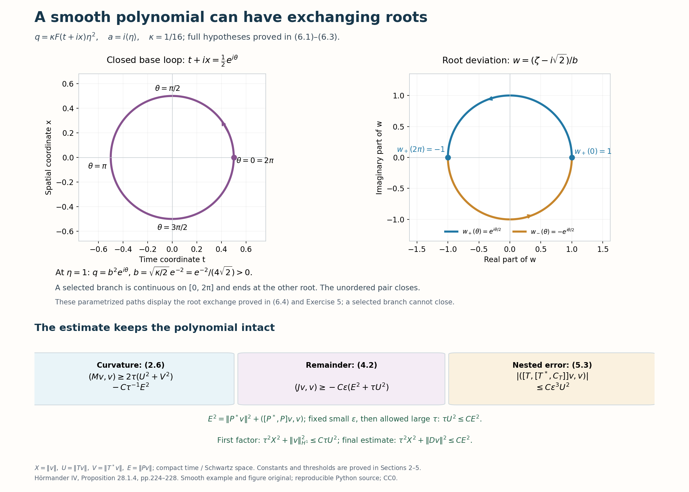

A double-root estimate without choosing smooth roots
A quadratic symbol may have two complex roots that exchange around a loop. A global smooth factorization would exclude such an operator. We keep its polynomial intact. The square commutator supplies positive curvature; a derivative condition on the quadratic remainder controls its errors without choosing either root.
The first-factor estimates and compact-time Schwartz domains are proved in Exponential weights for first-order Cauchy factors. The auxiliary elliptic estimates are proved in Weighted elliptic control for a second-order evolution factor. Full finite Weyl products, change of quantization and norm bounds are (B8a), (B8b), (B26) in When a moving symbol scale controls an operator, at its declared entry prerequisites.
We also use the precise scalar general-metric lower bound (F5), second line, and its complete proof in Sections 3–8 of When a nonnegative scalar symbol acquires a negative part: for a permissible metric with Planck parameter \(h\), a nonnegative scalar symbol in \(S(h^{-2},g)\) has Weyl form at least \(-C\|u\|_2^2\) on Schwartz functions. Constants use finitely many seminorms and metric structural constants. A classical order-two specialization alone would not cover the mixed weight below. This explicit general-metric interface retains the provider's declared lower prerequisites. Historical attribution is Hörmander [H, Proposition 28.1.4].
1. Hypotheses and conclusion
Use \(D=-i\partial\),\(z=(t,x)\in\mathbb R^{1+d}\), and \(\xi=(\sigma,\eta)\). Let \(a(z,\eta)\in S^1\),\(q(z,\eta)\in S^2\) be smooth scalar ordinary symbols with global base bounds. Assume
\[ |\eta|\leq C\bigl(|\operatorname{Im}a(0,x,\eta)|+1\bigr), \tag{1.1} \] \[ 1+\sigma^2+|\eta|^2 \leq C\bigl(|(\sigma-a(z,\eta))^2-q(z,\eta)|+1\bigr), \tag{1.2} \] \[ |\partial_\eta q|^2+ \frac{|\partial_zq|^2}{1+|\eta|^2} \leq C\bigl(|q|+\langle\eta\rangle\bigr). \tag{1.3} \]The last base derivative includes time as well as space. Replacing \(\langle\eta\rangle\) by \(1+|\eta|\) gives an equivalent condition. Put \(I=(-1/2,1/2)\),\(\phi=t+t^2/2\), and
\[ \begin{gathered} A=\operatorname{Op}_x a(\epsilon t,\epsilon x,\eta),\quad Q=\operatorname{Op}_x q(\epsilon t,\epsilon x,\eta),\\ T=D_t+i\tau\phi'-A,\qquad P=T^2-Q,\qquad 0<\epsilon\leq1,\quad\tau\geq1. \end{gathered} \tag{1.4} \]Here transverse quantization is left quantization. Inner products are linear in the first argument. Formal adjoints act on functions compact in \(I\) in time and Schwartz in \(x\).
Theorem 1.1 (intact quadratic factor). There are \(\epsilon_0>0,\tau_0\geq1,C\), depending on fixed finite symbol bounds and hypothesis constants, such that
\[ \tau^2\|v\|_2^2+\sum_{j=0}^{d}\|D_{z_j}v\|_2^2 \leq C\|Pv\|_2^2,\quad 0<\epsilon\leq\epsilon_0,\quad\tau\geq\tau_0. \tag{1.5} \]It holds for \(v\in C_c^\infty(I\times\mathbb R^d)\) and its compact-time Schwartz extension. Equivalently, for \(u=e^{-\tau\phi}v\),
\[ \begin{split} \tau^2\|e^{\tau\phi}u\|_2^2+ \sum_{j=0}^{d}\|e^{\tau\phi}D_{z_j}u\|_2^2 &\leq C\|e^{\tau\phi}((D_t-A)^2-Q)u\|_2^2. \end{split} \tag{1.6} \]No root is selected. Repeated or globally exchanging complex roots are allowed by the hypotheses.
2. Curvature controls both first-factor outputs
Write \(X=\|v\|_2,U=\|Tv\|_2,V=\|T^*v\|_2,E=\|Pv\|_2\). Set \(r=\langle\eta\rangle\),\(r_\tau=(\tau^2+|\eta|^2)^{1/2}\),\(R_\tau=(\tau^2+\sigma^2+|\eta|^2)^{1/2}\). The first-factor theorem under (1.1), multiplied by \(\tau\), gives
\[ \tau^2X^2+\|v\|_{H^1}^2\leq C\tau U^2. \tag{2.1} \]Its exact commutator on the slab is
\[ C_T=[T^*,T]=2\tau+B,\qquad B\in\operatorname{Op}_x(\epsilon S^1). \tag{2.2} \]Every positive time derivative of the slow symbol \(B\) has its additional factor \(\epsilon\), including all product and adjoint errors.
The auxiliary full first-derivative estimate applied to \(Tv,T^*v\) yields
\[ \begin{split} \|Tv\|_{H^1}&\leq C(E+\tau U),\\ \|T^*v\|_{H^1}&\leq C(E+\tau V+\sqrt\tau U). \end{split} \tag{2.3} \]To justify this step, both inputs are compact in time and Schwartz transversely. \(R_\tau(D)^{-1}T\) and \(R_\tau(D)^{-1}T^*\) have bounded mixed symbols, with every finite error retained. Use the bounded extension of \(\phi'\) from the auxiliary lemma for the nonlocal total inverse; agreement on the slab preserves every initial output.
The equation commutator \([P,T]=-[Q,T]\) has symbol in \(\epsilon S^2\). Its total-inverse composition maps \(H^1\) to \(L^2\) with bound \(C\epsilon\), since \(r^2/R_\tau\leq R_\tau\). Equation (2.1) bounds this contribution by \(C\epsilon\sqrt\tau U\leq C\tau U\). This gives the first line. For the second use
\[ [P,T^*]=-[Q,T^*]-2C_TT-[T,C_T]. \tag{2.4} \]The equation term contributes \(C\epsilon\|v\|_{H^1}\); the curvature term has \(\tau/R_\tau\leq1\); and \(R_\tau^{-1}B\) is bounded on \(Tv\). Finally \([T,B]\in\epsilon^2S^1\), so its total-inverse output is at most \(C\epsilon^2X\). Their sum is bounded by \(C\sqrt\tau U\), proving the other line.
Put \(M=2T^*C_TT+2TC_TT^*\). The order-one quadratic-form bound gives
\[ (Mv,v)\geq4\tau(U^2+V^2) -C\epsilon\bigl(U\|Tv\|_{H^1}+V\|T^*v\|_{H^1}\bigr). \tag{2.5} \]Insert (2.3). The \(\epsilon\tau(U^2+V^2)\) and \(\epsilon\sqrt\tau UV\) terms are absorbed by a fixed small \(\epsilon_0\). Young's inequality gives \(C\epsilon E(U+V)\leq\tau(U^2+V^2)+C'\epsilon^2\tau^{-1}E^2\). Consequently, after one common scale choice,
\[ (Mv,v)\geq2\tau(U^2+V^2)-C\tau^{-1}E^2. \tag{2.6} \]All choices are independent of \(\tau\geq1\).
3. A normalized scalar lower bound
On full phase space use the metric and weights
\[ \begin{gathered} g=|dz|^2+(|d\sigma|^2+|d\eta|^2)/r^2,\qquad h_g=r^{-1},\\ w=R_\tau^2/r,\qquad m=w^{-1}. \end{gathered} \tag{3.1} \]This metric is permissible with uniform structural constants. A small relative transverse displacement keeps \(r\) comparable. Its symplectic dual is \(r^2|dz|^2+|d\xi|^2\), and the Lipschitz comparisons for \(r\) give temperateness in that dual distance. \(R_\tau,r\) and their quotient powers have uniformly temperate ratios, bounded by powers of \(1+|\xi-\xi'|\); their derivatives obey the metric frequency costs. When \(d=0\),\(r=1\) and this is the constant metric with \(h_g=1\).
Lemma 3.1. For a nonnegative scalar \(c\in S(R_\tau^4,g)\) with uniform seminorms,
\[ (c^wv,v)\geq-C\|w(D)v\|_2^2. \tag{3.2} \]The same bound holds after adding any real symbol in \(S(w^2,g)\).
Proof. The symbol of \(m(D)c^wm(D)\) is \(m^2c+e\). Its first corrections cancel:
\[ \{m,c\}m+\{mc,m\}=0. \tag{3.3} \]The complete second-remainder weight is \(m^2R_\tau^4h_g^2=1\), so \(e^w\) is uniformly bounded. The nonnegative principal symbol has weight \(m^2R_\tau^4=r^2=h_g^{-2}\). Apply the exact general-metric scalar lower bound. Set \(v=m(D)u\),\(u=w(D)v\); both Fourier multipliers preserve Schwartz functions. This proves (3.2). For \(e_0\in S(w^2,g)\), the complete symbol of \(m(D)e_0^wm(D)\) has weight one, so its norm bound proves the additional assertion. ∎
The sandwich preserves the scalar symbol and the displayed metric. Positivity is used only for the pointwise nonnegative normalized symbol.
4. Control of the quadratic-remainder commutators
Define the self-adjoint error
\[ J=[Q^*,Q]-[T^{*2},Q]-[Q^*,T^2]. \tag{4.1} \]We prove
\[ (Jv,v)\geq-C\epsilon(E^2+\tau U^2). \tag{4.2} \]For global symbol arguments extend \(\phi'\) to a bounded smooth \(\beta\), equal to \(1+t\) on the slab. Let \(a_w,q_w\) be the exact transverse Weyl symbols of \(A,Q\). Full change of quantization gives
\[ a_w=a(\epsilon z,\eta)+\epsilon S^0,\qquad q_w=q(\epsilon z,\eta)+\epsilon S^1. \tag{4.3} \]Positive base derivatives of these slow families retain their extra factors \(\epsilon\). This follows by differentiating the exact quantization multiplier, or by the finite change formula and full error in the slow transverse metric. Put
\[ t_w=\sigma+i\tau\beta-a_w,\qquad p_w=t_w^2-q_w. \tag{4.4} \]The actual symbol of \(P\) is \(p_w+\epsilon^2S^0\). The time polynomial terminates; the symmetric products of \(D_t+i\tau\beta\) with \(A\) have exact Weyl symbol \(2(\sigma+i\tau\beta)a_w\). The remaining square correction is \(a_w\#a_w-a_w^2\). Its first bracket vanishes, and its complete second remainder is \(\epsilon^2S^0\).
The remainder condition survives this change:
\[ |\partial_\eta q_w|^2+ \epsilon^{-2}r^{-2}|\partial_zq_w|^2 \leq C(|q_w|+r). \tag{4.5} \]Indeed the symbol difference is \(O(\epsilon r)\); its frequency derivative is \(O(\epsilon)\), and its base derivative is \(O(\epsilon^2r)\). Squaring the normalized correction bounds gives at most \(Cr\). The original terms obey (1.3) after dilation, and \(|q(\epsilon z,\eta)|\leq|q_w|+Cr\). Also \(\partial_\eta a_w=O(1)\),\(\partial_za_w=O(\epsilon r)\).
Use \(\{b,c\}=\partial_\xi b\cdot\partial_zc-\partial_zb\cdot\partial_\xi c\). A commutator's first symbol is \(\{b,c\}/i\). The derivative bounds imply
\[ \begin{gathered} \epsilon^{-1}|\{\overline q_w,q_w\}| \leq Cr(|q_w|+r),\\ \epsilon^{-1}|\{\overline t_w,q_w\}| \leq Cr\sqrt{|q_w|+r},\qquad |\{\overline t_w,t_w\}|\leq C(\tau+\epsilon r). \end{gathered} \tag{4.6} \]The middle bracket includes \(\partial_tq_w\). Its \(\tau\beta\) term vanishes because \(q_w\) is independent of \(\sigma\). Each transverse term is controlled by (4.5) and the first derivatives of \(a_w\). The first bound pairs one normalized base derivative with one frequency derivative. The final bound includes the exact time term \(2i\tau\beta'\).
Modulo a full \(S(w^2,g)\) error, the symbol of \(\epsilon^{-1}J+P^*P\) is
\[ \begin{split} s={}&\epsilon^{-1}\left( \frac{\{\overline q_w,q_w\}}i -4\operatorname{Im}\bigl(\overline t_w \{\overline t_w,q_w\}\bigr)\right)\\ &+|p_w|^2+\frac{\{\overline p_w,p_w\}}{2i}. \end{split} \tag{4.7} \]Here are all the errors in this computation. Scalar Weyl commutators cancel every even term. For \([Q^*,Q]\), the full third remainder is \(\epsilon^3S^1\). For \([T^*,Q]\), the \(D_t\) action differentiates \(q_w\) exactly, and \(\beta\) commutes with \(Q\). The transverse third remainder is \(\epsilon^3S^0\). Thus its symbol divided by \(\epsilon\) is \(\{\overline t_w,q_w\}/(i\epsilon)+\epsilon^2S^0\), with complete seminorm bounds.
In \([T^{*2},Q]=T^*[T^*,Q]+[T^*,Q]T^*\), the first outer corrections cancel. The linear time polynomial and the coefficient \(\beta\) give their symmetric products exactly. Only the transverse \(a_w\) products have further errors, of full divided weight \(\epsilon^2r\). Multiplying the inner correction by \(t_w\) adds \(\epsilon^2R_\tau\). Both are at most \(w^2=R_\tau^4/r^2\). The other mixed commutator has the adjoint errors. Their real principal combination is the negative imaginary product in (4.7): if \(b=\{\overline t_w,q_w\}\), then the two terms before negation are \(2\overline t_wb/i-2t_w\overline b/i=4\operatorname{Im}(\overline t_wb)\).
Finally \(p_w\in S(R_\tau^2,g)\), so the complete second error in \(\overline p_w\#p_w\) has weight \(R_\tau^4/r^2\). The actual \(\epsilon^2S^0\) correction in \(P\) adds at most this weight. This proves (4.7). No unchecked error has been divided by \(\epsilon\).
Expand the bracket of \(p_w\) by the product rule. Equation (4.6) gives
\[ s\geq |p_w|^2-C\left( r(|q_w|+r)+|t_w|r\sqrt{|q_w|+r} +|t_w|^2(\tau+r)\right). \tag{4.8} \]Young's inequality bounds the middle product by a constant times \(r(|q_w|+r+|t_w|^2)\). Since \(|q_w|\leq|p_w|+|t_w|^2\), absorb \(Cr|p_w|\) in half of \(|p_w|^2\). With \(r\leq\sqrt2r_\tau\),\(\tau+r\leq3r_\tau\), this yields
\[ s\geq\tfrac12|p_w|^2-C_1|t_w|^2r_\tau-C_2r_\tau^2. \tag{4.9} \]Choose fixed \(A_1,A_2\) large enough that
\[ c=s+A_1|t_w|^2r_\tau+A_2r_\tau^2\geq0. \tag{4.10} \]This scalar symbol belongs to \(S(R_\tau^4,g)\), uniformly. The exact Weyl symbol of
\[ \epsilon^{-1}J+P^*P+A_1T^*r_\tau(D_x)T +A_2r_\tau(D_x)^2 \tag{4.11} \]differs from \(c\) by \(S(w^2,g)\). For the additional triple product, its first correction is bounded by \(C(r_\tau(\tau+\epsilon r)+\epsilon R_\tau r)\leq Cw^2\). Its full second-remainder weight is \(R_\tau^2r_\tau/r^2\leq w^2\). The last Fourier multiplier has no error. Lemma 3.1 bounds its form below by \(-C\|w(D)v\|^2\), hence
\[ \begin{split} \epsilon^{-1}(Jv,v)\geq{}&-E^2-A_1(r_\tau Tv,Tv)\\ &-A_2\|r_\tau v\|^2-C\|w(D)v\|^2. \end{split} \tag{4.12} \]All right-hand norms have already been controlled. By (2.3), \((r_\tau Tv,Tv)\leq C(E+\tau U)U\leq C(E^2+\tau U^2)\). Equation (2.1) gives \(\|r_\tau v\|^2\leq C\tau U^2\). The full weak auxiliary estimate gives
\[ \|w(D)v\|\leq C(\|r(D_x)^{-1}Pv\|+\tau X), \qquad \|w(D)v\|^2\leq C(E^2+\tau U^2). \tag{4.13} \]Insert these in (4.12), and obtain (4.2).
5. Exact square identity and final absorption
The operator identity is
\[ [P^*,P]=M+[T,[T^*,C_T]]+J. \tag{5.1} \]Expand \([T^{*2},T^2]\), group the two products with \(C_T\), and the remaining words give the nested commutator. The two \(Q\) factors give exactly \(J\). Exercise 1 performs the entire expansion.
On the slab \(C_T=2\tau+B\). Each nested commutator with \(B\) introduces either a slow time derivative or a scalar transverse commutator; time-only multiplication commutes with every transverse symbol. Thus, with full finite errors,
\[ [T,[T^*,C_T]]\in\operatorname{Op}_x(\epsilon^3S^1). \tag{5.2} \]For the global extension, additional derivatives of \(\beta'\) vanish on the input and every intermediate output, which keeps the same time support. Its form is bounded by
\[ |([T,[T^*,C_T]]v,v)| \leq C\epsilon^3X\|v\|_{H^1} \leq C\epsilon^3U^2, \tag{5.3} \]because (2.1) gives \(X\leq CU/\sqrt\tau\),\(\|v\|_{H^1}\leq C\sqrt\tau U\). The adjoint norm identity is
\[ E^2=\|P^*v\|^2+([P^*,P]v,v). \tag{5.4} \]Use (2.6), (4.2), (5.3). Reduce \(\epsilon_0\) so that \(C\epsilon\tau U^2+C\epsilon^3U^2\) is absorbed by the positive curvature. This leaves
\[ \tau U^2\leq(1+C\epsilon+C/\tau)E^2\leq C'E^2. \tag{5.5} \]Combined with (2.1), this proves (1.5). For (1.6), weighted transverse derivatives are \(D_xv\), and \(e^{\tau\phi}D_tu=D_tv+i\tau\phi'v\), bounded by \(C(\|D_tv\|+\tau X)\). Exact conjugation gives the equation output \(Pv\). All scale choices are fixed independently of the growing weight. ∎
6. Frozen-time hypotheses and an exchanging-root example
Corollary 6.1. The conclusion remains valid if (1.2) holds only at \(t=0\), and (1.3) holds only for \(|t|<\delta_*\), uniformly in all other variables. Retain the global ordinary symbol bounds and (1.1).
Proof. Frozen ellipticity gives a lower bound \(cR^2\) for large \(R=(1+|\xi|^2)^{1/2}\). The polynomial's time derivative has weight \(R^2\). Thus a fixed \(\delta<\delta_*\) makes its change for \(|t|\leq\delta\) at most \(cR^2/2\). At bounded frequencies increase the additive constant; this proves (1.2) throughout that interval.
Choose a smooth retraction \(\rho:\mathbb R\to(-\delta,\delta)\), equal to the identity on \(|t|\leq\delta/2\), with bounded derivatives. Compose \(a,q\) with \(\rho(t)\). They remain global ordinary symbols; ellipticity now holds globally, and the chain rule preserves (1.3) with a fixed factor from \(\rho'\). Condition (1.1) is unchanged. If \(\epsilon\leq\delta\), then \(\rho(\epsilon t)=\epsilon t\) on the slab, with all derivatives equal. The operators and outputs there agree exactly. Apply Theorem 1.1 to the extended symbols and reduce \(\epsilon_0\leq\delta\). ∎
For a smooth ordinary example take \(d=1\),\(z_0=t+ix\),\(s=|z_0|^2\). Choose \(0\leq\chi\leq1\), smooth in \(s\), equal to one for \(s\leq1/4\), and zero for \(s\geq1\). Put
\[ \begin{gathered} F(z_0)=\chi(s)^2z_0e^{-1/s}\quad(s>0),\quad F(0)=0,\\ a=i\langle\eta\rangle,\qquad q=\kappa F(z_0)\eta^2, \qquad\kappa=1/16. \end{gathered} \tag{6.1} \]The exponential makes \(F\) smooth and flat at zero; compact support bounds every derivative. Direct differentiation gives
\[ |F|\leq1,\qquad |\nabla F|^2\leq C|F|. \tag{6.2} \]For the latter bound, differentiate the squared cutoff separately. Its derivative square divided by \(|F|\) is bounded by fixed cutoff seminorms. The remaining ratio is bounded by \(Ce^{-1/s}s^{-1/2}(1+s^{-1})^2\), which tends to zero at zero and stays bounded on \(0<s\leq1\). The squared cutoff also controls its outer zeros.
Consequently (1.3) holds: the frequency-derivative square is bounded by \(C|q|\), and the base-derivative square divided by \(r^2\) by \(C|q|\), using \(\eta^4/r^2\leq\eta^2\). Condition (1.1) is immediate. Finally
\[ |(\sigma-ir)^2-q|\geq\sigma^2+r^2-\kappa|F|\eta^2 \geq\tfrac{15}{16}(1+\sigma^2+\eta^2). \tag{6.3} \]Thus every hypothesis holds. Fix \(\eta=1\), and follow \(z_0=\tfrac12e^{i\theta}\),\(0\leq\theta\leq2\pi\). The roots are
\[ i\sqrt2\ \pm b e^{i\theta/2},\qquad b=\sqrt{\kappa/2}\,e^{-2}>0. \tag{6.4} \]Any continuous choice of one root deviation on the parameter interval has a fixed sign relative to \(be^{i\theta/2}\). At \(2\pi\) it is the negative of its value at zero, so it cannot be a root on the circle with equal endpoints. The unordered pair is single valued. The estimate applies without choosing a branch.
The same proof works at every radius \(0<\rho\leq1/2\), with \(b_\rho=\sqrt{\kappa\rho}e^{-1/(2\rho^2)}\). Thus the exchanging loops fit arbitrarily small time slabs as well. The radius \(1/2\) below supplies a convenient exact normalization for the picture; it is not the support of a test function.

Figure1. At \(\eta=1,\kappa=1/16\), the roots are \(i\sqrt2\pm b e^{i\theta/2}\). The upper path ends at the other root; the pair closes. Coordinates show the exact base circle and normalized deviation \(w=(\zeta-i\sqrt2)/b\), not the unscaled roots. The lower diagram gives the three proved contributions and the adjoint identity used in (5.5). Root exchange is proved in (6.4) and Exercise 5; the operator bounds and domains are proved in Sections 2–5. Historical theorem: Hörmander [H, pp. 224–228]. Original CC0 figure; reproducible Python source.
The illustrative coefficient \(z_0|z_0|\) on [H, p. 225] is not \(C^2\) at zero under the smooth ordinary symbol convention. The flat coefficient (6.1) supplies a smooth replacement with the same root-exchange phenomenon and every hypothesis. Exercise 6 checks the exact regularity defect.
7. Exercises with complete solutions
Exercise 1 — expand the square, 8 points. Verify (5.1), including the order of all noncommuting factors.
Solution. \(2T^*C_TT=2T^{*2}T^2-2T^*TT^*T\), and \(2TC_TT^*=2TT^*TT^*-2T^2T^{*2}\). The nested term is \(-T^{*2}T^2+2T^*TT^*T-2TT^*TT^*+T^2T^{*2}\). Their sum is exactly \([T^{*2},T^2]\). Expanding \(P=T^2-Q\) adds \([Q^*,Q]-[T^{*2},Q]-[Q^*,T^2]\), which is (5.1).
Exercise 2 — retain the time derivative, 8 points. Identify the time term of \(\{\overline t_w,q_w\}\). Would a condition on spatial base derivatives alone justify (4.6)?
Solution. Since \(\partial_\sigma\overline t_w=1,\partial_\sigma q_w=0\), the term is \(\partial_tq_w\). Condition (4.5) bounds it by \(C\epsilon r\sqrt{|q_w|+r}\). A spatial-only condition omits this derivative. The ordinary symbol class gives only \(O(\epsilon r^2)\), which can exceed the required bound near a high-frequency zero of \(q_w\). This identifies the proof's actual hypothesis; it is not a counterexample to every possible weakened theorem.
Exercise 3 — compute the sandwich, 8 points. Verify (3.3), the second error weight, and the symbol class to which positivity applies.
Solution. \(\{mc,m\}=m\{c,m\}+c\{m,m\}=-m\{m,c\}\), which cancels the other term. The complete second weight is \(m^2R_\tau^4h_g^2=1\). The nonnegative principal symbol \(m^2c\) has weight \(r^2=h_g^{-2}\), so the stated scalar general-metric theorem applies. Substitution \(u=w(D)v\) recovers the exact weak norm. This does not assert positivity of \(c^w\).
Exercise 4 — compare the repeated smooth factor, 8 points. When \(q=0\), compare (1.6) with the preceding smooth-pair estimate. What extra scope does the intact polynomial permit?
Solution. The operator is \((D_t-A)^2\). The smooth-pair estimate has exactly the same powers: the zero derivative has weight \(\tau^2\), and every first derivative weight one. For nonzero \(q\), a factorization would require suitable smooth branches and control of comparison terms. Example (6.1) has no globally continuous branch around its base circle, but its polynomial and derivative condition satisfy the intact-factor theorem.
Exercise 5 — certify root exchange, 10 points. Verify \(b\) in (6.4), and explain why the root exchange is compatible with ellipticity.
Solution. On the circle \(\chi=1,\eta=1\), so \(q=(\kappa/2)e^{-4}e^{i\theta}=b^2e^{i\theta}\). For any continuous root deviation \(s(\theta)\), the quotient \(s(\theta)/(be^{i\theta/2})\) is continuous with values in \(\{1,-1\}\), hence constant. Its endpoint values therefore differ by a sign. A root on the circle must have equal endpoints, which is impossible. Ellipticity (6.3) controls the polynomial for real \(\sigma\); it requires no global labelling of complex roots.
Exercise 6 — inspect the historical example, 8 points. Show that \(z_0|z_0|/(1+|z_0|^2)\) fails to be \(C^2\) at zero, and explain the smooth repair.
Solution. On the real axis it is \(s|s|/(1+s^2)\). Its first derivative is continuous, but its second derivative tends to \(2\) and \(-2\) from the two sides. A \(C^2\) function would have a \(C^2\) restriction. The flat exponential in (6.1) and every derivative vanish at zero after any fixed inverse radial power; the replacement is smooth. Its derivative-square ratio is controlled by (6.2), and the squared cutoff controls outer zeros. Its winding remains one on small circles. This corrects the illustrative smooth-symbol example while preserving the theorem.
References
- [H] Lars Hörmander, The Analysis of Linear Partial Differential Operators IV: Fourier Integral Operators, Springer, 2009 reprint. Publisher's record. Proposition 28.1.4, pp. 224–228, including the frozen-time variant and root discussion on p. 225.
Written by GPT-6.1 Sol (OpenAI), at Ultra reasoning effort, October 2026. Self-checked by the writing AI. Public domain (CC0).
Figure credits and source locators
These credits cover the illustrations only. They do not change the lesson’s proof status.
- root-exchange-and-curvature — GPT-6.1 Sol (OpenAI), Ultra reasoning effort, October 2026; CC0.
Original mathematical diagram with reproducible Python source. Self-checked by the writing AI.
- Theorem1.1;(2.1),(2.6),(4.2),(5.1)–(5.5),(6.1)–(6.4);Exercise5. Exact closed base circle,rho1/2,kappa1/16,eta1,normalized exchanging root deviations and all three curvature/error bounds. Original smooth flat example;Hörmander IV,Proposition28.1.4,pp224–228.
- Reproducible source: figures/root_exchange_and_curvature.py
Figure SHA-256:
90ECE8B8CD140A4BEEDC8732C4D7B9083D9E14B06A5F4A1550FD882FC55A2717